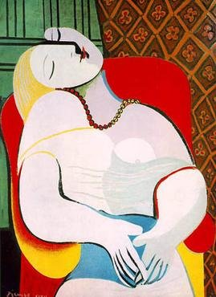

Le Rêve (The Dream)
Pablo Picasso · 1932 · Oil on canvas · 130 × 97 cm · Private collection
In copyright. Look and learn: shown for study, not for download.
Picasso was fifty and his model, Marie-Thérèse Walter, was twenty-two. The picture is said to have been painted in one afternoon, on 24 January 1932. In 2006 its owner, Steve Wynn, put his elbow through the canvas while showing it to friends, leaving a six-inch tear, and the repair cost $90,000. He sold the painting in 2013 for $155 million.